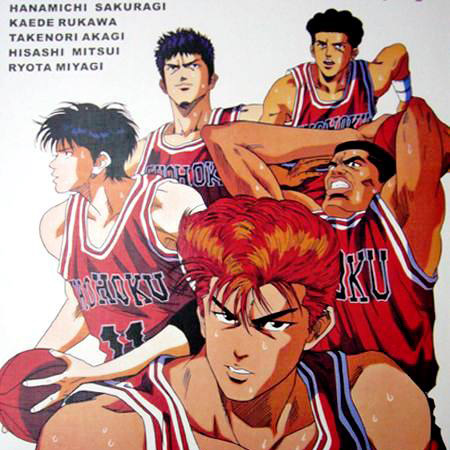

世界が终わるまでは…
Slam Dunk (Japanese: スラムダンク Hepburn: Suramu Danku) is a sports-themed manga series written and illustrated by Takehiko Inoue about a basketball team from Shōhoku High School. It was serialized in Weekly Shōnen Jump from 1990 to 1996, with the chapters collected into 31 tankōbon volumes by Shueisha. It was adapted into an anime series by Toei Animation which has been broadcast worldwide, enjoying much popularity particularly in Japan, several other Asian countries and Europe. As of 2012, Slam Dunk had sold 120 million copies in Japan alone, making it one of the best-selling manga series in history. Inoue later used basketball as a central theme in two subsequent manga titles: Buzzer Beater and Real. In 2010, Inoue received special commendations from the Japan Basketball Association for helping popularize basketball in Japan.
Hanamichi Sakuragi is a delinquent and the leader of a gang. Sakuragi is very unpopular with girls, having been rejected an astonishing fifty times. In his first year at Shohoku High School, he meets Haruko Akagi, the girl of his dreams, and is overjoyed when she is not repulsed or scared of him like all the other girls he has asked out.
Haruko, recognizing Sakuragi's athleticism, introduces him to the Shohoku basketball team. Sakuragi is reluctant to join the team at first, as he has no prior experience in sports and thinks that basketball is a game for losers (in addition to the fact that the fiftieth girl rejected him in favor of a basketball player). Sakuragi, despite his extreme immaturity and fiery temper, proves to be a natural athlete and joins the team, mainly in the hopes of impressing and getting closer to Haruko. Later on, Sakuragi realizes that he has come to actually love the sport, despite having previously played primarily because of his crush on Haruko. Kaede Rukawa — Sakuragi's bitter rival (both in basketball and because Haruko has a massive crush, albeit one-sided, on Rukawa), the star rookie and a "girl magnet" — joins the team at the same time. Not long after, Hisashi Mitsui, a skilled three-point shooter and ex-junior high school MVP, and Ryota Miyagi, a short but fast point guard, both rejoin the team and together these four struggle to fulfill team captain Takenori Akagi's dream of winning the national championship. Together, these misfits gain publicity and the once little-known Shohoku basketball team becomes an all-star contender in Japan.